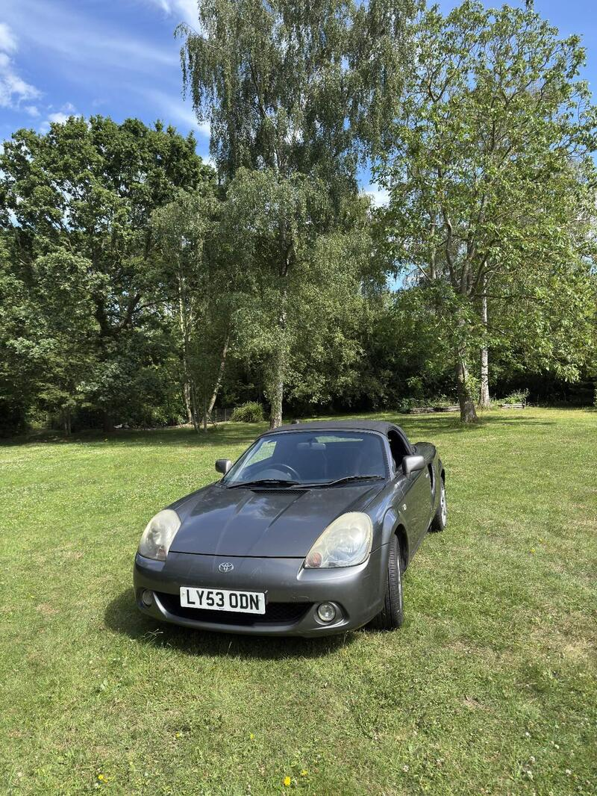
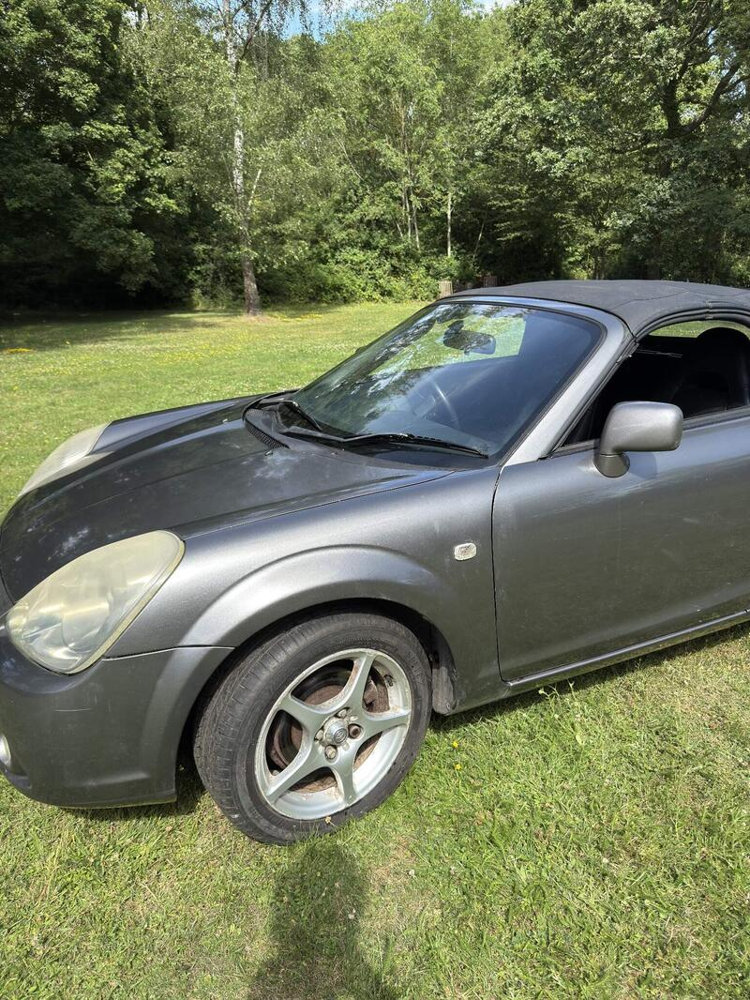
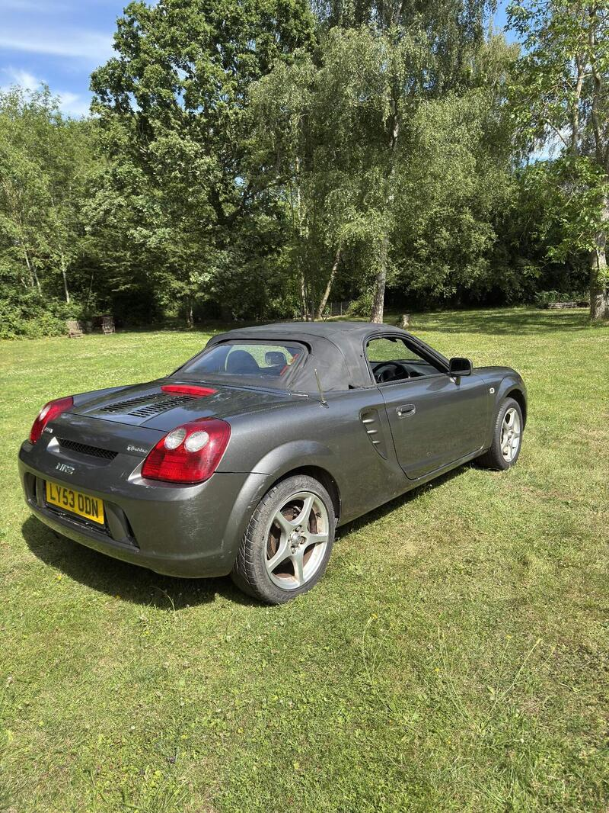
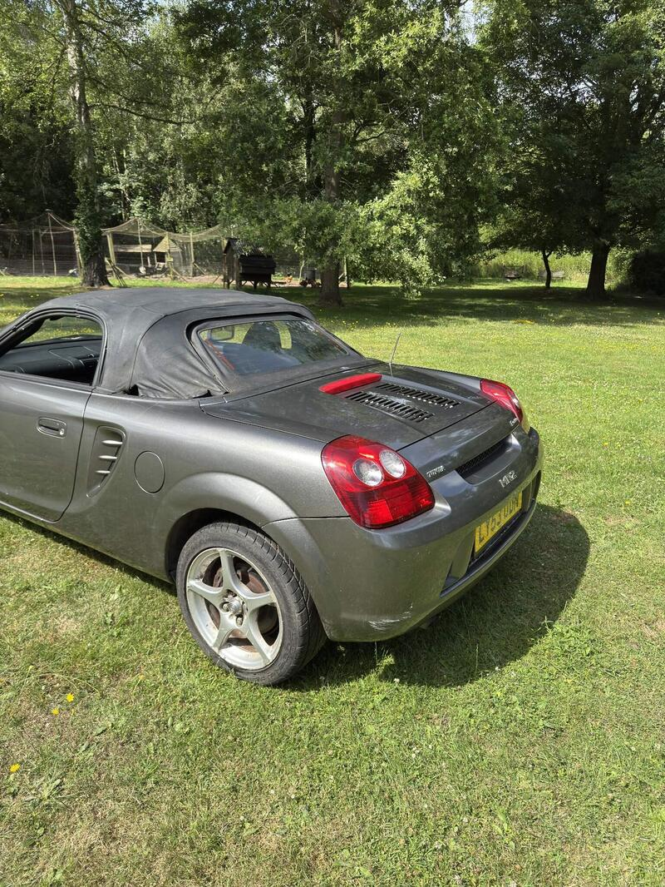

Seller photos from the AutoTrader ad.
Toyota MR2 1.8 VVT-i
A cheap mid-engined MR2, and a later car.
Key facts
| Price | £1,795 |
|---|---|
| Year | 2004 |
| Miles | 110,039 |
| Model | Toyota MR2 1.8 VVT-i |
| Colour | Silver |
| Registration | 2004 (53 reg) |
| Owners | 3 owners |
| Service history | Not stated |
| MOT (AutoTrader ad) | 19 Dec 2026 (ad) |
| MOT (seller's text) | Recent (ad) |
| Seller | Private |
| Location | Hockley |
| From GU7 | 62 mi (AutoTrader) |
| Checked | 15 October 2026 |
Why buy it
- Standard and unmodified (ad)
- Later 2003-on car, so less pre-cat risk
Things to check
Hood has tears, needs cosmetic TLC (ad)
110k miles
- Toyota MR2 Roadster weak spots
Body rot not a major concern, but the rear subframe rots. Pre-cat breakdown scores the bores (pre-2003 worst) – compression test, look for blue smoke; many have pre-cats removed.
Seller says (extract)
“Selling my 2003 53 plate Toyota MR2 Roadster with 110,000 miles on the clock. It is a completely standard and unmodified example that is mechanically sound. It starts on the key first time, every time, and runs and drives exactly as it should. It comes with a recent MOT from a few months ago and is HPI clear with no hidden history. The manual folding roof mechanism works perfectly and goes up and down smoothly. Please note this is an honest, usable car but it does need some cosmetic TLC. The soft top canvas shows age-related wear and has minor tears at corners, visible in the photos. The alloy wheels would benefit from a refurbishment due to paint flaking, and the headlights are currently oxidized though this can be easily fixed with a standard polishing kit. This is a reliable runner that is ready to be driven away. Perfect for a weekend project, a summer runaround, or a track car base. Located in Hockley. No time wasters please.…”